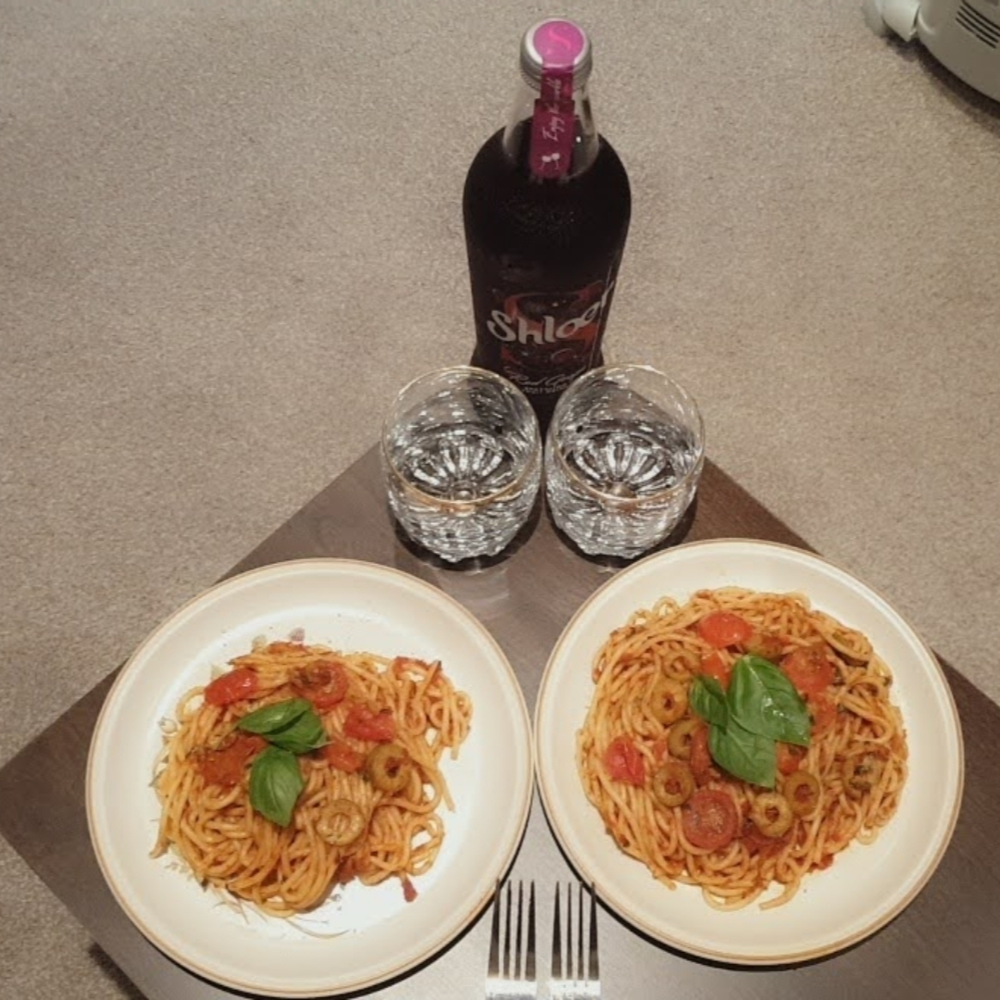

Malus Spaghetti Recipe

Description
Spicy prawn pasta with a side of Shloer not made by me. I tried to help however I am not the best in the kitchen at times. However its the thought that counts! SOMEBODY TOUCHA MY SPAGHET
Ingredients
- Spaghetti
- Bolognese sauce
- Tomatoes
- Virgin olive oil
- Spinach
- Prawns
- Bottle of Shloer
Steps
- Get a partner
- Pretend to work while taking orders to wash the spinach
- Add spaghetti to simmering water. Please dont be uncultured and snap it
- From what i saw add a table spoon of olive oil to a pan
- Add prawns until its edible i guess
- Add the tomatoes into pan until fried
- Once spaghetti is cooked after 12 mins, add prawns and tomatoes
- Top off with light spinach
- Enjoy your SPAGHET with a glass off shloer
PLEASE DON'T LET ANYONE TOUCHA YOUR SPAGHET
Return to main page